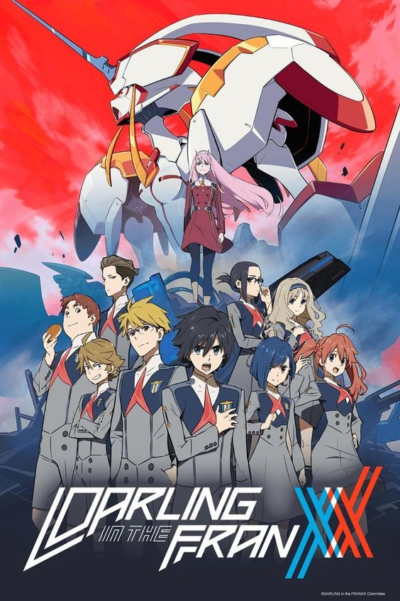
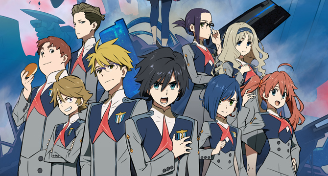

DARLING
DARLING in the FRANXX (ダーリン・イン・ザ・フランキス)
เนื้อเรื่องย่อ เนื้อเรื่องกล่าวถึงอนาคตอันไกลโพ้น ผืนดินต่างๆถูกทำลาย มนุษย์ได้ย้ายไปอาศัยบนเมืองเคลื่อนที่ที่เรียกว่า Plantation เมืองนี้มีสถานที่ฝึกนักบินที่เรียกว่า Mistilteinn หรือ กรงนก เหล่าเด็กๆที่อยู่ที่นี้ไม่รู้จักหรือรับรู้ถึงโลกภายนอกและอิสระเสรี พวกเขาอยู่เพียงเพื่อทำภารกิจ นั่นคือการต่อสู้กับสิ่งมีชีวิตลึกลับ Kyoryu ด้วยหุ่นยนต์ยักษ์ที่เรียกว่า Franxx สำหรับพวกเขาแล้วการต่อสู้คือหลักฐานในการมีชีวิตอยู่ เด็กหนุ่มนาม Hiro หรือ Code:016 ครั้งหนึ่งเขาถูกเรียกว่าอัจฉริยะ แต่เขากลับไม่ได้รับเลือกให้ขับ Franxx เขาตามคนอื่นไม่ทัน และไร้ความสำคัญลง วันหนึ่งเด็กสาวปริศนาผู้มีเขา 2 ข้างบนหัว นาม Zero Two ก็มาปรากฏตัวต่อหน้าเขา แล้วทุกอย่างก็เริ่มขึ้น

ผู้กำกับกำกับและเขียนบทโดย Atsushi Nishigori (ออกแบบตัวละครใน Tengen Toppa Gurren Lagann , ผู้กำกับ
THE IDOLM@STER) ร่วมเขียนบทโดย Naotaka Hayashi (มือเขียนบทเกม Chaos;Head , Steins;Gate ,
Robotics;Notes , Plastic Memories) โดยมีผู้ช่วยผู้กำกับคือ Toshifumi Akai
(ออกแบบตัวละครและกำกับฉากอนิเมชั่นใน Magi : The Kingdom of Magic , Sora no Woto)
ออกแบบตัวละครและกำกับฉากอนิเมชั่นโดย Masayoshi Tanaka (Anohana , High School of the Dead , Toradora
, Waiting in the Summer) ออกแบบเมคานิคโดย Shigeto Koyama (Star Driver , Napping Princess)
และกำกับฉากต่อสู้โดย Hiroyuki Imaishi (ผู้กำกับ Tengen Toppa Gurren Lagann , Kill la Kill)